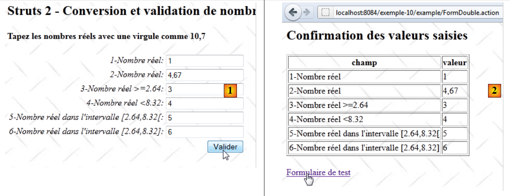

13. Exemplo 10 – Conversão e validação de números reais
O novo aplicativo apresenta a inserção de números reais:
 |
- em [1], o formulário de entrada
- em [2], a resposta retornada
O funcionamento do aplicativo é semelhante ao da entrada de números inteiros; portanto, comentaremos apenas os pontos que diferem.
13.1. O projeto NetBeans
O projeto do NetBeans é o seguinte:
 |
- em [1], as visualizações do aplicativo
- [Accueil.JSP]: a página inicial
- [FormDouble.JSP]: o formulário de preenchimento
- [ConfirmationDouble.JSP]: a página de confirmação
- em [2], o arquivo de mensagens [messages.properties] e o arquivo de configuração principal do Struts
- em [3]:
- [FormDouble.java]: a ação que exibe e processa o formulário
- [FormDouble-validation.xml]: as regras de validação da ação [FormDouble]. Esse arquivo delega essas validações ao modelo, de acordo com o método que acabamos de ver.
- [FormDoubleModel]: o modelo da ação [FormDouble]
- [FormDoubleModel-validation.xml]: as regras de validação do modelo
- [FormDoubleModel.properties]: o arquivo de mensagens do modelo
- [example.xml]: arquivo de configuração secundário do Struts
13.2. A configuração do projeto
O projeto é configurado principalmente pelo seguinte arquivo [example.xml]:
<?xml version="1.0" encoding="UTF-8" ?>
<!DOCTYPE struts PUBLIC
"-//Apache Software Foundation//DTD Struts Configuration 2.0//EN"
"http://struts.apache.org/dtds/struts-2.0.dtd">
<struts>
<package name="example" namespace="/example" extends="struts-default">
<action name="Accueil">
<result name="success">/example/Accueil.JSP</result>
</action>
<action name="FormDouble" class="example.FormDouble">
<result name="input">/example/FormDouble.JSP</result>
<result name="cancel" type="redirect">/example/Accueil.JSP</result>
<result name="success">/example/ConfirmationFormDouble.JSP</result>
</action>
</package>
</struts>
Ele é semelhante ao que foi analisado para a entrada de números inteiros.
13.3. Os arquivos de mensagens
O arquivo [messages.properties] é o seguinte:
Accueil.titre=Accueil
Accueil.message=Struts 2 - Conversions et validations
Accueil.FormDouble=Saisie de nombres r\u00e9els
Form.titre=Conversions et validations
FormDouble.message=Struts 2 - Conversion et validation de nombres r\u00e9els
FormDouble.conseil=Tapez les nombres r\u00e9els avec une virgule comme 10,7
Form.submitText=Valider
Form.cancelText=Annuler
Form.clearModel=Raz mod\u00e8le
Confirmation.titre=Confirmation
Confirmation.message=Confirmation des valeurs saisies
Confirmation.champ=champ
Confirmation.valeur=valeur
Confirmation.lien=Formulaire de test
xwork.default.invalid.fieldvalue=Valeur invalide pour le champ "{0}".
O arquivo [FormDoubleModel.properties] é o seguinte:
double.format={0,number}
double1.prompt=1-Nombre r\u00E9el
double1.error=Tapez un nombre r\u00E9el
double2.prompt=2-Nombre r\u00E9el
double2.error=Tapez un nombre r\u00E9el
double3.prompt=3-Nombre r\u00E9el >=2.64
double3.error=Tapez un nombre r\u00E9el >=2.64
double4.prompt=4-Nombre r\u00E9el <8.32
double4.error=Tapez un nombre r\u00E9el <8.32
double5.prompt=5-Nombre r\u00E9el dans l''intervalle [2.64,8.32[
double5.error=Tapez un nombre r\u00E9el dans l''intervalle [2.64,8.32[
double6.prompt=6-Nombre r\u00E9el dans l''intervalle [2.64,8.32]
double6.error=Tapez un nombre r\u00E9el dans l''intervalle [2.64,8.32]
A linha 1 desempenha um papel importante. Voltaremos a esse assunto mais tarde.
13.4. O formulário de preenchimento
A visualização [FormDouble.JSP] é a seguinte:
<%@ page contentType="text/html; charset=UTF-8" pageEncoding="UTF-8"%>
<%@ taglib prefix="s" uri="/struts-tags" %>
<html>
<head>
<title><s:text name="Form.titre"/></title>
<s:head/>
</head>
<body background="<s:url value="/ressources/standard.jpg"/>">
<h2><s:text name="FormDouble.message"/></h2>
<h4><s:text name="FormDouble.conseil"/></h4>
<s:form name="formulaire" action="FormDouble">
<s:textfield name="double1" key="double1.prompt"/>
<s:textfield name="double2" key="double2.prompt" value="%{#parameters['double2']!=null ? #parameters['double2'] : double2==null ? '' :getText('double.format',{double2})}"/>
<s:textfield name="double3" key="double3.prompt" value="%{#parameters['double3']!=null ? #parameters['double3'] : double3==null ? '' :getText('double.format',{double3})}"/>
<s:textfield name="double4" key="double4.prompt" value="%{#parameters['double4']!=null ? #parameters['double4'] : double4==null ? '' :getText('double.format',{double4})}"/>
<s:textfield name="double5" key="double5.prompt" value="%{#parameters['double5']!=null ? #parameters['double5'] : double5==null ? '' :getText('double.format',{double5})}"/>
<s:textfield name="double6" key="double6.prompt"/>
<s:submit key="Form.submitText" method="execute"/>
</s:form>
<br/>
<s:url id="URL" action="FormDouble" method="cancel"/>
<s:a href="%{URL}"><s:text name="Form.cancelText"/></s:a>
<br/>
<s:url id="URL" action="FormDouble" method="clearModel"/>
<s:a href="%{URL}"><s:text name="Form.clearModel"/></s:a>
</body>
</html>
As linhas 13 a 18 correspondem aos seis campos de entrada de números reais. Os campos double2 a double5 possuem um atributo complexo value. Normalmente, os seis campos de entrada deveriam ser os seguintes:
<s:textfield name="double1" key="double1.prompt"/>
<s:textfield name="double2" key="double2.prompt"/>
<s:textfield name="double3" key="double3.prompt"/>
<s:textfield name="double4" key="double4.prompt"/>
<s:textfield name="double5" key="double5.prompt"/>
<s:textfield name="double6" key="double6.prompt"/>
Para resolver alguns problemas encontrados durante os testes, foi necessário tornar as coisas mais complexas. Por enquanto, o leitor pode ignorar essa complexidade. Explicaremos isso posteriormente.
13.5. A tela de confirmação
A tela de confirmação [ConfirmationFormDouble.JSP] é a seguinte:
 |
Seu código é o seguinte:
<%@ page contentType="text/html; charset=UTF-8" pageEncoding="UTF-8"%>
<%@ taglib prefix="s" uri="/struts-tags" %>
<html>
<head>
<title><s:text name="Confirmation.titre"/></title>
<s:head/>
</head>
<body background="<s:url value="/ressources/standard.jpg"/>">
<h2><s:text name="Confirmation.message"/></h2>
<table border="1">
<tr>
<th><s:text name="Confirmation.champ"/></th>
<th><s:text name="Confirmation.valeur"/></th>
</tr>
<tr>
<td><s:text name="double1.prompt"/></td>
<td><s:text name="double1"/></td>
</tr>
<tr>
<td><s:text name="double2.prompt"/></td>
<td>
<s:text name="double.format">
<s:param value="double2"/>
</s:text>
</td>
</tr>
<tr>
<td><s:text name="double3.prompt"/></td>
<td>
<s:text name="double.format">
<s:param value="double3"/>
</s:text>
</td>
</tr>
<tr>
<td><s:text name="double4.prompt"/></td>
<td>
<s:text name="double.format">
<s:param value="double4"/>
</s:text>
</td>
</tr>
<tr>
<td><s:text name="double5.prompt"/></td>
<td>
<s:text name="double.format">
<s:param value="double5"/>
</s:text>
</td>
</tr>
<tr>
<td><s:text name="double6.prompt"/></td>
<td><s:text name="double6"/></td>
</tr>
</table>
<br/>
<s:url id="URL" action="FormDouble!input"/>
<s:a href="%{URL}"><s:text name="Confirmation.lien"/></s:a>
</body>
</html>
A vista [ConfirmationFormDouble.JSP] limita-se a exibir o modelo [FormDoubleModel]. As linhas 47 a 49 mostram a exibição de um número real. Queremos que essa exibição leve em conta a localisation do aplicativo. De acordo com ela, um número real não será exibido da mesma forma na França (10,7) e na Grã-Bretanha (10.7). Para isso, utilizamos a tag <s:text>, que já havíamos usado até então para a internacionalização do aplicativo. Essa tag serve, portanto, também para a localização.
Aqui, a chave de mensagem utilizada é double.format. Essa chave pode ser encontrada no arquivo [FormDoubleModel.properties]:
double.format={0,number}
O valor associado à chave não é, neste caso, uma mensagem, mas um formato de exibição:
- 0 é um parâmetro que representa o valor a ser exibido. Neste caso, será o campo double5 do modelo.
- number representa o formato numérico. Ele será adaptado a cada país. Sem esse formato, o número 10.7 será sempre exibido como 10.7, independentemente do país.
A tag
<s:text name="double.format">
<s:param value="double5"/>
</s:text>
exibe a mensagem {0, number}, em que o parâmetro double5 (linha 2) substituirá o parâmetro 0 do formato. Assim, o modelo double5 será exibido no formato numérico localizado.
13.6. O modelo [FormDoubleModel]
Os campos double1 a double6 do formulário [FormDouble.JSP] são inseridos no seguinte modelo [FormDoubleModel]:
package example;
public class FormDoubleModel {
// construtor sem parâmetros
public FormDoubleModel() {
}
// campos
private String double1;
private Double double2;
private Double double3;
private Double double4;
private Double double5;
private String double6;
// modelo vazio
public void clearModel() {
double1 = null;
double2 = null;
double3 = null;
double4 = null;
double5 = null;
double6 = null;
}
// getters e setters
...
}
- os campos double1 e double6 são do tipo String
- os demais campos são do tipo Double
13.7. A validação do modelo
A validação do modelo é controlada por dois arquivos: [FormDouble-validation.xml] e [FormDoubleModel-validation.xml].
O arquivo [FormDouble-validation.xml] delega as validações ao [FormDoubleModel-validation.xml]:
<!--
<!DOCTYPE validators PUBLIC "-//OpenSymphony Group//XWork Validator 1.0.2//
EN" "http://www.opensymphony.com/xwork/xwork-validator-1.0.2.dtd">
-->
<!DOCTYPE validators PUBLIC "-//OpenSymphony Group//XWork Validator 1.0.2//
EN" "http://localhost:8084/exemplo-10/example/xwork-validator-1.0.2.dtd">
<validators>
<field name="model" >
<field-validator type="visitor">
<param name="appendPrefix">false</param>
<message/>
</field-validator>
</field>
</validators>
Já nos deparamos com esse arquivo.
O arquivo [FormDoubleModel-validation.xml] contém as seguintes regras de validação:
<!--
<!DOCTYPE validators PUBLIC "-//OpenSymphony Group//XWork Validator 1.0.2//
EN" "http://www.opensymphony.com/xwork/xwork-validator-1.0.2.dtd">
-->
<!DOCTYPE validators PUBLIC "-//OpenSymphony Group//XWork Validator 1.0.2//
EN" "http://localhost:8084/exemplo-10/example/xwork-validator-1.0.2.dtd">
<validators>
<field name="double1" >
<field-validator type="requiredstring" short-circuit="true">
<message key="double1.error"/>
</field-validator>
<field-validator type="regex" short-circuit="true">
<param name="expression">^[+|-]*\s*\d+(,\d+)*$</param>
<param name="trim">true</param>
<message key="double1.error"/>
</field-validator>
</field>
<field name="double2" >
<field-validator type="required" short-circuit="true">
<message key="double2.error"/>
</field-validator>
<field-validator type="conversion" short-circuit="true">
<message key="double2.error"/>
</field-validator>
</field>
<field name="double3" >
<field-validator type="required" short-circuit="true">
<message key="double3.error"/>
</field-validator>
<field-validator type="conversion" short-circuit="true">
<message key="double3.error"/>
</field-validator>
<field-validator type="double" short-circuit="true">
<param name="minInclusive">2.64</param>
<message key="double3.error"/>
</field-validator>
</field>
<field name="double4" >
<field-validator type="required" short-circuit="true">
<message key="double4.error"/>
</field-validator>
<field-validator type="conversion" short-circuit="true">
<message key="double4.error"/>
</field-validator>
<field-validator type="double" short-circuit="true">
<param name="maxExclusive">8.32</param>
<message key="double4.error"/>
</field-validator>
</field>
<field name="double5" >
<field-validator type="required" short-circuit="true">
<message key="double5.error"/>
</field-validator>
<field-validator type="conversion" short-circuit="true">
<message key="double5.error"/>
</field-validator>
<field-validator type="double" short-circuit="true">
<param name="minInclusive">2.64</param>
<param name="maxExclusive">8.32</param>
<message key="double5.error"/>
</field-validator>
</field>
<field name="double6" >
<field-validator type="requiredstring" short-circuit="true">
<message key="double6.error"/>
</field-validator>
<field-validator type="regex" short-circuit="true">
<param name="expression">^[+|-]*\s*\d+(,\d+)*$</param>
<param name="trim">true</param>
<message key="double6.error"/>
</field-validator>
</field>
</validators>
- a regra das linhas 12-21 verifica se o campo de entrada double1 segue o padrão de uma expressão regular que representa um número real.
- A regra das linhas 23 a 30 verifica se o campo de entrada double2 pode ser convertido em um número real de precisão dupla.
- A regra das linhas 32-43 verifica se o campo de entrada double3 pode ser convertido em um número real duplo >=2,64. Observe-se que é necessário utilizar a notação anglo-saxônica para números reais.
- A regra das linhas 45-56 verifica se o campo de entrada double4 pode ser convertido em um número real duplo <8,32.
- A regra das linhas 58-70 verifica se o campo de entrada double5 pode ser convertido em um número real do tipo double no intervalo [2,64; 8,32[.
- A regra das linhas 72 a 80 verifica se o campo double6 segue o padrão de uma expressão regular que representa um número real.
Assim que o arquivo [FormDoubleModel-validation.xml] for processado pelo interceptador de validação, este executa o método validate da ação [FormDouble], caso ele exista. Apresentaremos esse método juntamente com toda a ação.
13.8. A ação [FormDouble]
A ação [FormDouble] é a seguinte:
package example;
import com.opensymphony.xwork2.ActionSupport;
import com.opensymphony.xwork2.ModelDriven;
import java.util.Map;
import org.apache.struts2.interceptor.SessionAware;
import org.apache.struts2.interceptor.validation.SkipValidation;
public class FormDouble extends ActionSupport implements ModelDriven, SessionAware {
// construtor sem parâmetros
public FormDouble() {
}
// modelo da ação
public Object getModel() {
if (session.get("model") == null) {
session.put("model", new FormDoubleModel());
}
return session.get("model");
}
@SkipValidation
public String clearModel() {
// raz do modelo
((FormDoubleModel) getModel()).clearModel();
// resultado
return INPUT;
}
public String cancel() {
// limpa-se o modelo
((FormDoubleModel) getModel()).clearModel();
// resultado
return "cancel";
}
// SessionAware
Map<String, Object> session;
public void setSession(Map<String, Object> session) {
this.session = session;
}
// validação
@Override
public void validate() {
// a dupla entrada 6 é válida?
if (getFieldErrors().get("double6") == null) {
// substitui-se a vírgula pelo ponto na string double6
String strDouble6 = (((FormDoubleModel) getModel()).getDouble6()).replace(',', '.');
// String --> double
double double6 = Double.parseDouble(strDouble6);
// verificação
if (double6 < 2.64 || double6 > 8.32) {
addFieldError("double6", getText("double6.error"));
}
}
}
}
A ação [FormDouble] segue o mesmo modelo da ação [FormInt]. Comentaremos apenas o método validate. Vale lembrar que o método validate é executado após a análise do arquivo de validação [FormDoubleModel-validation.xml] e antes da execução do método execute.
- linha 48: se já houver erros no campo double6, não é realizada nenhuma ação adicional.
- linha 50: obtivemos uma string no formato 45,67. Ela foi armazenada no campo double6 do modelo. Substituímos a vírgula pelo ponto para obter 45.67.
- linha 52: a sequência 45.67 é convertida em um número real de precisão dupla. Isso deve funcionar, já que a sequência double6 respeita o formato de um número real.
- linha 54: verifica-se se o número real duplo obtido está no intervalo [2.64, 8.32].
- linha 55: se não for o caso, a mensagem de erro com a chave double6.error é anexada ao campo double6. Essa mensagem será encontrada no arquivo [FormDoubleModel.properties]. Ela será exibida quando o formulário com erros for exibido novamente.
13.9. Últimos detalhes
Agora, voltemos à complexidade dos campos de preenchimento do formulário [FormDouble.JSP]. Vamos analisar o campo double2. A análise se estende aos campos double3 a double5, que possuem um modelo do tipo Double. Para os campos double1 e double6, que possuem um modelo do tipo String, não há problema.
O campo de entrada double2 é o seguinte:
<s:textfield name="double2" key="double2.prompt" value="%{#parameters['double2']!=null ? #parameters['double2'] : double2==null ? '' :getText('double.format',{double2})}"/>
Vamos começar pela tag mais simples:
e vejamos o que acontece:
 |
- em [1], validamos o número correto double2. Na captura de tela, não dá para ver muito bem, mas digitamos o número com uma vírgula.
- em [2], a tela de confirmação. A entrada double2 passou nos testes de validação. O número é exibido com uma vírgula.
 |
- em [3], voltamos ao formulário
- em [4], o formulário. O que a captura de tela não mostra direito é que o número double2, que inicialmente era 4,32, passou a ser 4.32 com um ponto decimal.
 |
- em [5], revalidamos o formulário sem alterar nada
- em [6], é sinalizado um erro no campo double2.
O problema é o seguinte:
- inicialmente, em [1], a sequência de caracteres “4,32” foi convertida com sucesso no número real 4,32. Isso significa que a operação String --> Double foi bem-sucedida e que, portanto, nesse sentido, o Struts leva em conta a configuração regional, neste caso, a França.
- O novo formulário [4] exibe no campo double2 o valor do número real 4.32. Como a exibição não foi localizada, ela é exibida por padrão no formato anglo-saxão, c.a.d, com um ponto decimal. Portanto, na conversão de Double para String, o Struts não leva mais em conta a configuração regional; caso contrário, teria exibido 4,32 com uma vírgula.
Isso é, no mínimo, incoerente. Mas não importa, vamos localizar a exibição do número 4,32. A tag de entrada passa a ser a seguinte:
<s:textfield name="double2" key="double2.prompt" value="%{getText('double.format',{double2})}"/>
O atributo value especifica o valor a ser exibido no campo double2. Esse valor corresponde a uma expressão OGNL. Recordemos a definição da chave double.format no arquivo [FormDoubleModel.properties]:
double.format={0,number}
O método getText('chave') permite obter a mensagem associada a uma chave. Essa mensagem é buscada no arquivo correspondente à localização atual. Assim, se a localização fosse es (Espanha), a chave double.format teria sido procurada no arquivo [FormDoubleModel_es.properties].
O método getText('chave', {param0, param1, ...}) permite recuperar uma mensagem configurada. A mensagem
é uma mensagem parametrizada pelo parâmetro 0. Este é um parâmetro posicional. O método getText('double.format', {double2}) atribuirá o número double2 ao parâmetro 0. Por fim, solicita-se o valor de double2 no formato numérico localizado. Na França, o número 4,56 será localizado na string “4,56”.
Após essa transformação, repetimos os testes.
 |
Logo na exibição inicial do formulário, ocorre uma anomalia em [1]. Voltemos à tag:
<s:textfield name="double2" key="double2.prompt" value="%{getText('double.format',{double2})}"/>
Na exibição inicial, o valor do modelo double2 é null, um valor não numérico. Alteramos a tag da seguinte maneira:
<s:textfield name="double2" key="double2.prompt" value="%{double2==null ? '' : getText('double.format',{double2})}"/>
Desta vez, verificamos se double2==null. Se for o caso, exibimos uma string vazia.
Após essa alteração, retomamos os testes:
 |
 |
As telas de [1] a [4] mostram que o problema que buscávamos resolver está resolvido:
- na tela [1], insere-se 4,67
- na tela [2], esse número foi aceito
- em [3], ele é exibido novamente como 4,67 com a vírgula, o que é confirmado por [4].
Infelizmente, os problemas não param por aí. Vejamos a sequência a seguir:
 |
- em [5], adicionamos um caractere para invalidar double2
- em [6], os testes de validação funcionaram e o erro foi sinalizado. Porém, a sequência exibida em [6] não é a sequência incorreta, mas sim o valor atual do modelo double2. Perdemos o valor inserido.
Ao passar de [5] para [6], a consulta não é concluída. Ela é interrompida pelo interceptador de validação. Em [6], foi exibido o valor do modelo double2, que não recebeu um novo valor devido a essa interrupção. Portanto, é exibido seu valor anterior, quando deveria ter sido exibida a sequência digitada. Os parâmetros de uma consulta estão disponíveis para visualização por meio da notação #parameters['param']. Altera-se o campo de entrada double2 da seguinte maneira:
<s:textfield name="double2" key="double2.prompt" value="%{#parameters['double2']!=null ? #parameters['double2'] : double2==null ? '' : getText('double.format',{double2})}"/>
O valor exibido do campo double2 é calculado da seguinte forma: se o parâmetro 'double2' existir, ele será exibido; caso contrário, será exibido o modelo double2. O leitor é convidado a testar se esta nova versão da tag resolve os problemas encontrados.
13.10. Conclusion
É surpreendente que inserir números reais com verificação de validade seja tão complicado... Será que me escapou alguma coisa na documentação?